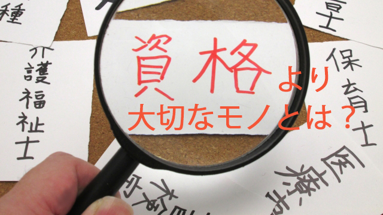

今回はとても現実的な話がしたい。
かつて塾講師をしていた頃、親と話すと「子どもの将来を考えたら資格とかあったほうが良いですかね？」とよく訊かれた。
「資格」といっても世の中にはたくさんの資格があるので一概に良し悪しは言えないが、私としては「資格があれば何かと有利ではないか」という発想それ自体に違和感をもった。
その発想の根底には「食いっぱぐれがないように」という生存欲求しか感じられず、その資格を生かしていかに社会に貢献するか、いかに生きがいを感じて人生を充実させるか。
そういう高次の発想がほとんど感じられないからだ。
親としては我が子が生活に困らないようにと願う気持ちは分かるが、この豊かな時代に「食べていくため」だけが主要な欲求ではあまりに情けない。
それにそもそも「資格」があれば何とかなるという時代ではない。
資格があっても直接就職に有利に働くこともあまりないし、資格を生かして開業するなら経営能力が必要であって資格それ自体が利益を生むわけではない。
資格もピンキリで、国家試験を合格しなければ取得できない難しいものから比較的簡単に取れるもの、中には怪しい団体などが勝手につくって発行するものまで多種多様。
これも資格をむやみに有り難がる人々が多いことの象徴かも知れない。
だからこう言いたい。
資格を取ることより人間を磨くことにエネルギーをかけよう。
第一そのほうが成功しやすい。
もちろん自分のつきたい仕事が資格を要求しているなら話は別だ。医者になりたいなら医師免許という資格が必要だし、弁護士を目指すなら司法試験に受かって弁護士登録しなければならない。不動産業をやりたいなら宅建や不動産鑑定士の資格が有利になる。
しかし「将来に備えて一応資格を取っておくか」は本末転倒の話でしかない。
子どものコミュニケーション力を高める
親がもし本当に我が子にサバイバルを望むなら、「資格を取れ」などとトンチンカンなことを言うのでなく、もっと人間力そのものを鍛えるような教育を施すべきだ。
人間力とは第一にコミュニケーション能力であり、責任感や使命感そして自らの為す行動が社会に貢献することを喜ぶ力である。
特に他者と協同して物事を達成するコミュニケーション能力は格別に重要である。
たとえば子どもが友だち集団や部活などで、どのような人間関係を築いているのか日頃からその交流の様子を把握しておきたい。それには子どもの話をよく聞くこと。勉強や成績についてうるさく言われるより、部活や友人とのエピソードなら喜んで話してくれるだろう。そこで子どもの集団内でのポジションも分かる。
子どもが仲間とどのようにコミュニケーションしているのか理解し、親も自分の考えを時折りはさみながら楽しく歓談できれば内容もより深まっていくだろう。
ポイントは難しく考えず、子どもの話すことを喜んで聞くこと。聞くだけ聞いたら大事な点だけ「自分の考え」として語ればよい。子どもの話９に対して親のコメントは１でよい。
親がアドバイスすべきは、自分のエゴを優先することより全体を考えて行動すること、目標を皆で共有すること、仲間ひとり一人の個性を認め特定の価値観で他者を排除しないことなどである。
このように子どもの友人関係や部活について語り合うことは文字通り子どもとのコミュニケーションをはかることであり、子ども自身のコミュニケーション能力向上にもなる。
気をつけたいのは「それは違うだろ」などとお説教しないこと。
今、社会は会社も役所も団体も急速にボーダレス化が進み海外はもとより国内でも異業種間交流や組織間交流が盛んだ。従来のように一つの会社で決まった職務だけ一生続ければよいという形態は完全に消失している。
どんな専門的知識をもっていても生涯それだけで「食える」という保証はないと覚悟しなければならない。
さらに現在の子どもたちが社会の中堅になるころには、終身雇用や所得の右肩上がりなどははるか昔の夢物語だろう。（というか今もうそうなりつつあるが…。）
しかしいつの時代も決して不用にならない能力がある。どんなに機械化され合理化されようと必要なものは「人間にしかできない能力」そのものだ。それはビジョン（夢、方向性）を描く力でありそのビジョンのもとに人を結集し、ビジョンを実現していく力だ。そこで他者に共感しながら励まし、他者の理解を得て夢を共有する優れて人間的なあり方が要求される。
資格だけで食っていける時代ではない
社会の地殻変動はとっくに始まっている。
古い価値を体現するものは急速に音を立てて崩れ去っている。
資格の王様といえる、医師や弁護士、公認会計士といった「士業」の世界も今や安泰ではない。
先日「弁護士の格差」（秋山謙一郎著、朝日新書）という本を読んだが、それによると今や弁護士も「食えなくて」廃業する者も出る時代だという。
同じことは医師や会計士にも及んでいる。病院も会計事務所も廃業するところが出始めている。開業すること自体も難しく大きな病院や大手の会計事務所でサラリーマンとして働くのが主流であり、その仕事内容も昔風にいえば３Kに近く普通のサラリーマンよりキツい。
もうだいぶ前だが知り合いの弁護士や会計士と話したとき、彼らは異口同音に「いまはふんぞり返って客（クライアント）が来るのを待てばよい時代ではない。こちらから営業をかけなくてはやっていけない…」と語っていた。そして昔のように独立開業など考えられず、同じ業態すなわち司法書士や税理士などとタッグを組んで様々な企画を企業や個人に提案していると言う。
要するに同じように「代理業務」を行うグループをつくって何らかの商品開発をし、客のニーズを掘り起こして販路を開拓していかなければ生き残れないというわけだ。
一昔前なら考えられなかったような変化だ。
ただ、ここで面白いのはこのように「士業」という専門職であっても必要なのは企画力や提案し開拓する力すなわち人間力が必要ということだ。
弁護士とか医師という「資格」だけで食っていける時代ではないのは以上のことからも確かである。彼らでさえそうなのだから他の資格は推して知るべし。
だから子どもたちに身につけさせるべきは、特定の資格を目指す狭い勉強ではなくどこに行っても通用する人間力であり、基本的なコミュニケーション能力である。
私なら我が子に資格より、資格をもった専門職の人をうまく使いこなす人になって欲しいと思う。
資格をもった専門家は社会に必要な存在である。私自身、仕事の上でも彼らに大いに助けられてきた。だから資格は必要ないとか、資格を目指すべきではないと言いたいのではない。その仕事が自分に向いている、その仕事を通じて世のため人のためになりたいと考えているならぜひ目指して欲しい。
しかし、そのような資格があるいはその仕事が社会的に有利だからという欲得で目指すことはむしろ社会的不利益を被ることになりかねない。
はっきり言って「専門バカ」は要らないのだ。
専門知識はあるが人間としての共感力やコミュニケーション力が低い人は、社会のお荷物でしかない。もうそんな時代が来ている。
だから結論はこうだ。
資格をもつことより資格をもった人間を結集し、より大きな目標を実現する人間を目指すべきだ。
そのために子どもに必要なこと。
それはシコシコ勉強することも大切だが、今しかできない経験―部活や生徒会活動そして友人との交流―を大事にしてほしい。そして人間関係の悩み喜び大切さをたっぷり味わってほしいといういうことだ。